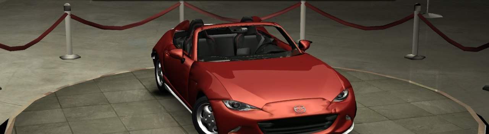
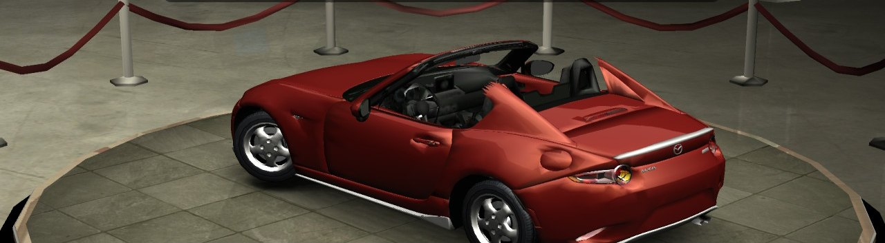
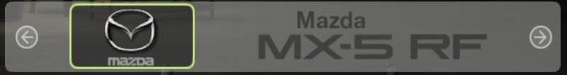

Version Xbox USA, jouée sur Nintendo Switch avec le portage nfsu2-sw. La MX-5 RF prend la place de la Mazda Miata, avec son son moteur, chez le concessionnaire et en course rapide. Tout est fabriqué sur ton PC à partir de tes disques et du modèle : aucun fichier du jeu n'est fourni ici.
Il te faut :
.iso (le portage tourne avec cette version) ;nfsu2x.zip (releases de nfsu2-sw) ;mazda_mx5_rf.kn5 du mod Assetto Corsa
Mazda MX-5 RF Hardtop, à extraire.Télécharge le paquet, mets ces fichiers dans son dossier, double-clique sur FABRIQUER.bat et réponds à ses questions
(jeu, langue, toit…). Quelques minutes plus tard, le dossier est dans SD_nfsu2x. Sans Python sur le PC, il télécharge
une copie portable officielle (python.org) dans son propre dossier : rien n'est installé dans Windows.
Un seul paquet pour les deux jeux : le même fabrique le dossier
d'Underground. La version française ajoute trois fichiers à côté de ceux du jeu (ZZDATA10, ZZDATA11,
ZDIR) ; ZDIR_anglais.BIN ramène l'anglais.
sdmc:/switch/nfsu2x/game/UDATA ailleurs : tes sauvegardes sont dedans.switch de SD_nfsu2x à la racine de la carte, par-dessus (fusionner, remplacer les fichiers).
Ne supprime ni ne remplace jamais tout le dossier game de la carte. Si le jeu et la VF y sont déjà, seuls
game/NFSUNDER/ZDIR.BIN, ZZDATA2.BIN et ZZDATA12.BIN changent.

Comment ça marche (les archives, l'index des voix que le jeu garde en mémoire, les formats) : le README sur GitHub. Avec le disque Europe, il existe aussi une autre voie : un portage fait depuis le programme européen est proposé à nfsu2-sw (#26, de BaZZtian) ; cette page garde le portage USA, celui pour lequel la MX-5 est faite.